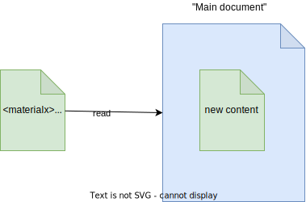
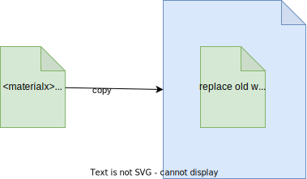
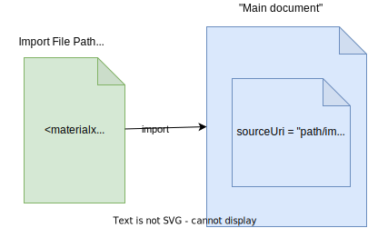

Documents are top level containers of all 'elements' supported by MaterialX.
It is useful to split up the contents of documents based on these semantic categories:
The corresponding API class is Document. Here you will find a listing of interfaces roughly broken down by the type of element.
Some important properties that are maintained at the document level include:
Version ('version'): This is the MaterialX version used to store the document contents. getVersionIntegers() in the Document API should be used. This differs from:
Namespace ('namespace') : This can be used to partition content and/or indicate ownership. Namespaces must be handled properly when when combining documents at runtime.
Colorspace ('colorspace') : This can be used to define the working color space, and as with namespaces care must be handled properly when combining documents at runtime.
Source URI ('sourceuri') : References to where content originated from can be specified here, and is useful as a partitioning mechanism. Documents do not by default store a 'sourceuri'.
File Prefix ('fileprefix') : Is a token prepended to any file name (`filename` type) references. It is a handy way to set the root directory for all image file names, without having to modify each individual reference. Note that 'fileprefix' will not be used to prefix file names which have absolute paths and that `fileprefix` can also be defined on a node graph -- which will prepend it's token before the document's token.
The API interface for 'resolving' identifiers such as file names is StringResolver. Within the API the word resolved is used to indicate interface variants which return the value after applying a resolver. For example getResolvedValueString() would return a filename with any `fileprefix` tokens added.
Even though any number of documents may be kept in files for interoperability, a single "working" document is generally required at runtime. All main interfaces work under the premise that:
The following are the main interfaces for dealing with documents. The Python Tutorials and Examples demonstrate these interfaces.
A document is allowed to become "invalid" (not follow the specification). The 'validate()' API can be used to check for adherence to the specification. A Python utility mxvalidate.py uses this interface is available as part of the MaterialX release.
Below is shown an example document which is read in (appended) to another document.

Below is shown an example document which copies the content of another document.

For documents which have namespaces, these namespaces are essentially "flattened" so that individual elements are namespace qualifiers added to their identifiers. The semantic API naming to indicate that an API supports namespaces is "qualified". For example, getQualifiedName() versus 'getName()'.'
Below is shown an example document with a 'namespace' and a 'fileprefix'. "Flattening"
basically means that every imported element's name has the namespace prepended, and
each filename string attribute has the file path prefix prepended.

Currently the only "inclusion" mechanism is via XML include directives.
As there is no current concept of one document referencing another document at runtime, it can be hard to determine where content originates from once "merged" into the main document.
One way to keep track of where content comes from is the fact at import always "tags" imported elements with their original URI. ('sourceURI' as shown in the image diagram). This can be useful for a various workflows including exclusion of these elements at write time. An example can be to exclude library definitions from node instances. At runtime, these tags can be used for instance to enforce additional user rules such as being non-editable, or non-deletable.
For node definitions, there is currently no formal construct for a "collection" (set) of documents to be used as a "library" / "module" / "package" etc and is thus up to the user to overlay semantics to partition content.
We can take as an example the folder structure for the "standard" libraries which come with the MaterialX distribution. Note that the folder names can be used to semantically separate a 'bxdf', and 'pbrlib', and 'stdlib' library, but there is no information within a document or set of documents which indicate it is or belongs to a "library".
libraries
├── bxdf
│ ├── lama
│ └── translation
├── lights
│ └── genglsl
├── pbrlib
│ ├── genglsl
│ │ └── lib
│ ├── genmdl
│ └── genosl
│ ├── legacy
│ └── lib
├── stdlib
│ ├── genglsl
│ │ └── lib
│ ├── genmdl
│ └── genosl
│ ├── include
│ └── lib
└── targets
In this case the 'import' API, will return a list of all files read under a given
folder. These can be used to keep track of what documents have been read. As
all the imported elements are tagged with the 'sourcuri' for the file it
is read from, this can be used to filter out 'library' content from non-library
content.
By intent, the MaterialX format is designed for interoperability using a standard set (library) of definitions.
Some points of interest for interop are listed.
Independence of interfaces from implementations is intentional. Any definitions which are based on standard library definitions can be supported by all core backend shader implementations thus providing for implementation standardization. Source code implementations for standard library definitions are written to conform with one another. e.g the GLS, OSL, and MDL implementations are meant to be logically identical.
Naturally transferring to a system which embeds dependent data requires additional logic , and conversely transforming from such a system requires "unpacking" logic. For example `glTF` embeds images and requiring specific packing and unpacking (e.g. is "occlusion, roughness, metalic" packing into single images). Some of these are not as bespoke, so could be potentially encoded as reusable node graphs.
More extensive documentation for this format's interop can be found in this project.
It is useful to keep image references using relative URI paths and use `fileprefix` specifiers and only "resolve" to absolute paths during deployment (e.g. when sending to a renderer or code generation).). Utilities to resolve are categorized as part of the "resolving" process. This would also include `UDIM` file name resolution.
It is also useful to keep `colorspace` and `unit`s unresolved. For both, resolution logic is dependent on the deployment target. e.g. the working colorspace for a render, or the unit applied to geometry within an application.
A flattenFilenames() utility is provided to perform performs both flattening and resolving using built in resolvers for `fileprefix` as well as accepting a custom resolver. The last option is useful to perform custom application / renderer specific token substitution.
Node Definitions: It is useful to keep definitions which encapsulate a logical entity for
a user and to only "flatten" these into it's atomic definitions, or
shader code at deployment time. For example a "plastic" material could be a definition which is
converted to standard library nodes at some later time. However for interop purposes, instances of
the plastic material are passed around.
A node definition "flattening" can be achieved using the
flattenSubgraphs()
API interface.
An integration may deem that it is too "costly" to keep abstract definitions and instead keep only standard library nodes, or just source code. The first, still allows for implementation independence and maintains interoperability, but the latter does not. For example `Three.js` keeps static code snippets for definitions. This static source code can easily be out of sync and can lose important properties like versioning.
MaterialX has been designed to be file format backwards compatible. Thus
any older document can always be assumed to be compatible with the current
version of MateriaX.
There is built in "upgrade" mechanism which is available as a document level utility
(`upgradeVersion()`)
to upgrade a documents contents current runtime version.
Note that issues can ensue by running different run-times with different versions as
you may end up with incompatible documents. A "single version" model is recommended.

An upgrade will automatically be performed as part of document reading.
Note that for and between patch releases the version number of saved documents
does not change and thus upgrade will not occur.
For example, a patch release of "1.38.6" will not perform any upgrade for a document
of version "1.38" as only the major (1) and minor (38) versions are compared.

Automatic upgrading can be overridden via the `upgradeVersion` option on XmlReadOptions (See description of reading in `Document Management`) A small caveat is that if something has been deprecated and removed from a release the document may not read in properly. For convenience, a Material release includes a Python utility script (`mxupdate.py`) which can be used to automate document upgrades.
There is no mechanism to "downgrade" a document to an earlier version.
Examples of changes to be watchful for include existing node definition changes,
and addition of new definitions. It is recommended to not
replace older versions with a newer version if not required.

Note that if there are resource or geometric binding dependencies
it may be required to version them as well. An example of this is "standard_surface"
which changed the default values of it's `base` and `base_color` attributes by swapping them
(0.8, and 1.0 in the older version and 1.0 and 0.8 in the newer). Thus if there was a previous texture
bound to `base` which assumed
a modulation by a `base_color` of 1.0, then it's contents would need to be modified taking into
account
that the current `base_color` is now 0.8.

Basically, the upgrade mechanism does not know and thus cannot take into consideration external content and non-standard library definitions changes. This is the responsibility of the integration.
Anything that is stored which is not part of a MaterialX document is also not taken into consideration when upgrading. This includes derived / generated content such as shader code. For instance if `OSL` code is generated for a given version, if that code implementation changes in a future version the originally generated code may not be compatible the newly generated code. Thus as with interoperability, it is recommended to keep data in it's "original" MaterialX form as much as possible.